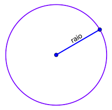
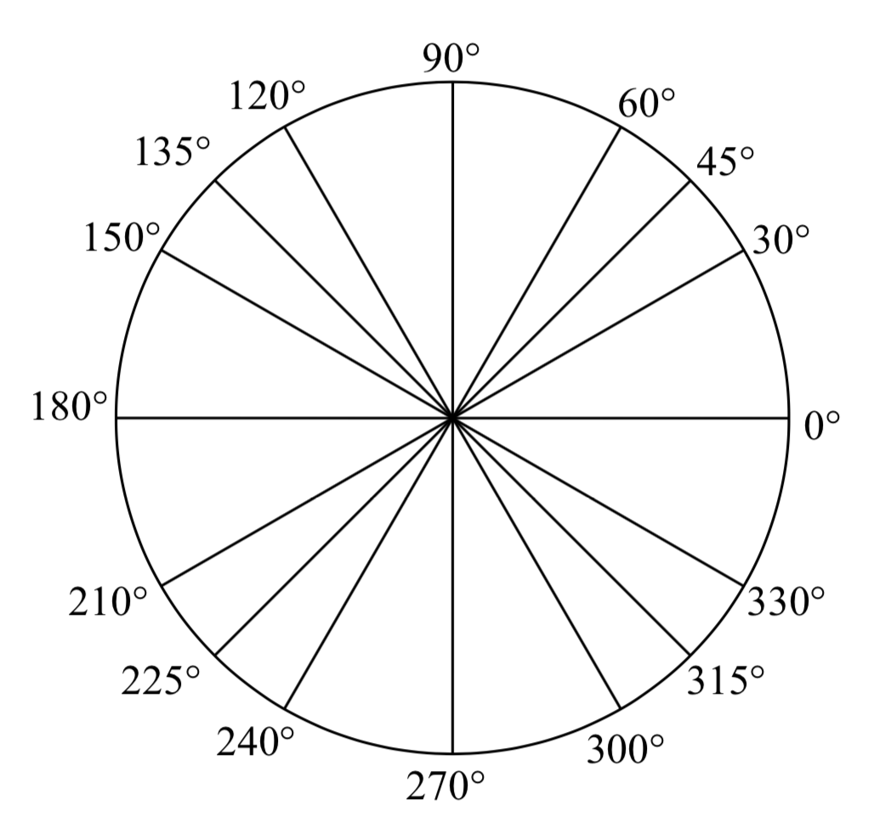
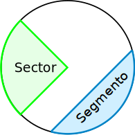
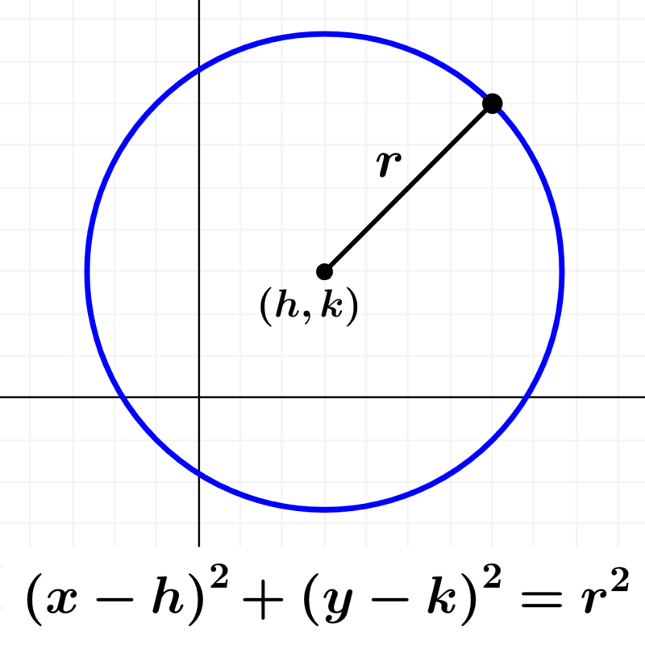

Um círculo é uma forma geométrica fundamental que é caracterizada por
uma série de propriedades específicas, veja abaixo:
Definição e Elementos Principais:
- Um círculo é uma forma plana que consiste em todos os pontos equidistantes
de um ponto central chamado centro.
- A distância do centro a qualquer ponto na circunferência do círculo é
chamada de raio. O raio é a medida fixa de um círculo.

Propriedades Básicas:
- O comprimento da linha que forma a borda do círculo é chamado de
circunferência.
- A fórmula para calcular a circunferência é C = 2πr, onde C é a circunferência
e r é o raio.
- A área dentro do círculo é chamada de área do círculo, e é calculada por
A = πr², onde A é a área e r é o raio.
Ângulos e Arcos:
- Os círculos são compostos por 360 graus, e qualquer ângulo no centro do
círculo é chamado de ângulo central.
- A medida de um ângulo central é diretamente proporcional à medida do
arco correspondente na circunferência.
- Um arco de 360 graus é igual a toda a circunferência, enquanto um
arco de 180 graus é metade dela.

Secções de Círculo:
- Um círculo pode ser dividido em várias seções, incluindo setores
circulares e segmentos circulares.
- Setores circulares são partes do círculo delimitadas por dois
raios e a circunferência.
- Segmentos circulares são partes do círculo delimitadas por
um arco e um segmento de reta que liga os extremos do arco.

Teorema de Pitágoras:
- O teorema de Pitágoras pode ser aplicado a triângulos formados
dentro de um círculo, conhecidos como triângulos inscritos. Este teorema
estabelece uma relação entre os comprimentos dos lados de um triângulo
retângulo e pode ser útil para resolver problemas envolvendo círculos.
Usos Práticos:
- Círculos são comuns na geometria, mas também têm muitas aplicações
práticas na vida cotidiana. Eles são amplamente usados em engenharia,
arquitetura, design gráfico, física, astronomia e muito mais.
- Exemplos de objetos baseados em círculos incluem rodas,
engrenagens, discos, pratos, moedas e muitos outros.
Equação Geral:
- A equação geral de um círculo com centro (h, k) e raio r é (x - h)²
+ (y - k)² = r², onde (x, y) representa as coordenadas de qualquer
ponto na circunferência.
